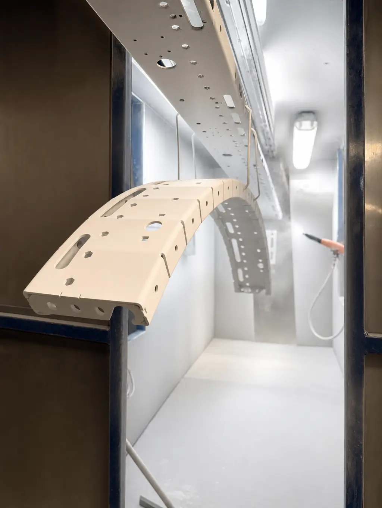

Entre las marcas de pintura en polvo en México que se usan en la industria están AkzoNobel, Axalta, Sherwin Williams, Tiger y Vitracoat, las mismas con las que trabajamos en Steel Paint. Ninguna es mejor en abstracto: se elige la que cumple la ficha técnica de tu pieza.
Esta guía no es un ranking. Es una explicación de cómo se mueve el mercado, qué debes revisar en la ficha técnica y por qué un maquilador puede trabajar con varios fabricantes a la vez.
Recuerda que somos maquiladores de pintura en polvo: no fabricamos ni vendemos el polvo. Si apenas empiezas con el tema, revisa antes qué es la pintura electrostática.
Marcas de pintura en polvo en México: las que trabajamos y qué las distingue
Estas son las cinco marcas con las que procesamos piezas. Cada fabricante tiene varias familias de producto, por lo que su catálogo vigente es la fuente para detalles.
- AkzoNobel: multinacional de pinturas y recubrimientos; su línea de polvos industriales se conoce como Interpon
- Axalta: fabricante global de recubrimientos con presencia en la cadena automotriz; sus polvos se comercializan bajo la línea Alesta
- Sherwin Williams: empresa de recubrimientos con una línea de polvos conocida como Powdura
- Tiger: fabricante especializado en pintura en polvo, conocido en el mercado por su línea Tiger Drylac
- Vitracoat: proveedor de polvos con presencia en la cadena automotriz del país
Los nombres de línea pueden cambiar con el tiempo, así que verifícalos siempre en el catálogo del fabricante. Los desarrollos por industria, como el caso automotriz, los vemos en pintura en polvo para la industria automotriz en Monterrey.
La ficha técnica manda más que la marca
Dos polvos del mismo color pueden comportarse distinto. La ficha técnica es el documento que dice qué es cada uno y cómo debe usarse. Esto es lo que debes buscar:
- La resina base (epóxica, poliéster, híbrida o poliuretano), que define el uso interior o exterior. Se explica en tipos de pintura en polvo.
- El acabado: brillo y textura, como los de tipos de acabados en pintura electrostática.
- El color y su código o referencia.
- Las condiciones de curado que recomienda el fabricante.
- Las pruebas o normas que cita, sin asumir resultados que no estén en el documento.
Cuando tu cliente final exige una especificación, suele indicar directamente el fabricante y el código. En ese caso la elección ya está hecha y lo que sigue es validarla.
Qué responde cada dato de la ficha técnica
| Dato de la ficha | Qué te responde |
|---|---|
| Resina | ¿Sirve para exterior? |
| Brillo | ¿Cómo se verá la pieza? |
| Código de color | ¿Puedo repetir el lote? |
| Condiciones de curado | ¿Qué proceso requiere? |
| Pruebas citadas | ¿Qué respaldo tiene? |
Cómo elegir entre una marca y otra
Si no tienes una especificación impuesta, estos criterios ayudan a decidir sin sesgos:
Función primero. Define si la pieza va en interior o exterior, qué esfuerzo soportará y qué metal es. Con eso se descartan polvos que no corresponden, sin importar la marca.
Después revisa disponibilidad del color o de la textura que quieres en el catálogo, la continuidad de abasto del código para lotes futuros y el soporte técnico que ofrece el fabricante. Si el color es lo que más te importa, consulta también colores de pintura electrostática y carta RAL.
Cómo viaja la especificación del cliente final al maquilador
En cadenas como la automotriz o la de equipo, la especificación suele bajar desde el cliente final hasta el proveedor que pinta la pieza. En cada eslabón se mantiene el mismo fabricante, el mismo código y la misma ficha técnica, para que el acabado no cambie por el camino.
Por eso, cuando mandas piezas a maquilar, lo más útil que puedes darle a tu maquilador es el documento de especificación: código del polvo, fabricante, brillo, textura y condiciones de curado indicadas por la ficha.
Ejemplos por situación
- Tu cliente te entrega el código y el fabricante: se mantiene tal cual y se valida contra su panel de muestra.
- Tu cliente solo indica una referencia RAL: pide al maquilador opciones de distintos fabricantes y compara con paneles físicos antes de decidir.
- El código que usabas ya no está disponible: solicita un equivalente y aprueba una muestra antes de procesar el lote completo.
- Quieres cambiar de marca por abasto o por costo: valida color, brillo, textura y condiciones de curado antes de cambiar, y avisa a tu cliente si su especificación lo exige.
- La misma pieza se pinta en dos plantas: usa el mismo fabricante y el mismo código en ambas.
Preguntas para hacer antes de definir la marca
Estas preguntas te sirven con tu maquilador y con el distribuidor del polvo:
- ¿El código que necesito está disponible de forma continua, o solo por lotes?
- ¿Qué resina tiene y es adecuada para interior o exterior?
- ¿Cuáles son las condiciones de curado que indica la ficha técnica?
- ¿Hay un panel de muestra o catálogo físico para validar color y textura?
- ¿Existe un equivalente en otro fabricante si este código falla?
- ¿La ficha cita normas de prueba y qué condiciones se usaron?
Cuándo conviene mantener una marca y cuándo cambiarla
Mantén la marca cuando la especificación de tu cliente la nombra, cuando el color se compara contra una muestra aprobada o cuando la pieza forma parte de un ensamble con otras ya pintadas. En esos casos, cambiar de fabricante solo introduce riesgo.
Considera cambiarla cuando el código deja de estar disponible, cuando necesitas una textura o un acabado que otro fabricante ofrece con mejor ajuste, o cuando la ficha técnica de otra opción responde mejor al uso final. Siempre con muestra aprobada antes del lote.
Cómo trabaja un maquilador con varias marcas
Un maquilador como Steel Paint no se casa con una sola marca: aplica el polvo que corresponde a tu especificación. Eso te da libertad para mantener el fabricante que tu cliente ya aprobó, o para elegir otro cuando partimos de cero.
Las fichas técnicas están disponibles para que las valides antes de procesar. Si estás comparando proveedores, te servirá la guía de cómo elegir un maquilador de pintura en polvo en Monterrey.
Errores comunes al hablar de marcas
- Asumir que mismo color significa mismo acabado: cada fabricante formula distinto, y la textura también cambia (revisa la guía de pintura electrostática texturizada).
- Cambiar de marca a medio proyecto sin validar el color contra la muestra aprobada.
- Pedir "la mejor marca" sin decir para qué es la pieza.
- Ignorar la ficha técnica y confiar solo en una foto o en un nombre comercial.
Un polvo equivalente no es un polvo idéntico
Cuando un código no está disponible se habla de un polvo equivalente. Ese equivalente puede coincidir en color y diferir en brillo, textura o condiciones de curado, así que no debe sustituirse a ciegas. Lo correcto es pedir una muestra, compararla contra la referencia aprobada y confirmar con quien especificó la pieza antes de procesar el lote.
Preguntas frecuentes sobre las marcas de pintura en polvo
¿Cuáles son las marcas de pintura en polvo que se usan en México?
En la industria mexicana se usan varios fabricantes internacionales y nacionales. En Steel Paint trabajamos con AkzoNobel, Axalta, Sherwin Williams, Tiger y Vitracoat, y elegimos entre ellas según la ficha técnica que pide cada cliente.
¿Qué marca de pintura en polvo es la mejor?
No hay una mejor en general. Lo que importa es que el polvo cumpla la especificación de tu pieza: resina, brillo, color, uso interior o exterior y las pruebas que exija tu cliente. Dos marcas pueden ser igual de buenas para un mismo trabajo.
¿Puedo pedir una marca o un código de polvo específico?
Sí. Si tu cliente final o tu especificación indican un fabricante o un código, indícalo desde la cotización para que el maquilador confirme disponibilidad y el proyecto se procese con ese polvo.
¿El mismo color se ve igual en todas las marcas?
No necesariamente. Aunque dos polvos compartan nombre de color o referencia RAL, el pigmento y la formulación pueden variar. Por eso conviene validar con un panel de muestra del fabricante.
¿Steel Paint vende pintura en polvo?
No. Somos maquiladores: aplicamos el polvo del fabricante que corresponde a tu especificación sobre las piezas que nos envías.
Elige por la especificación, no por el logotipo
La marca importa menos que la correspondencia entre el polvo y tu pieza. Si partes de la ficha técnica, defines el código que tu cliente exige y validas el color con una referencia física, cualquiera de los fabricantes serios del mercado puede darte un acabado correcto. La decisión se toma en el papel y en la muestra, no en el nombre.